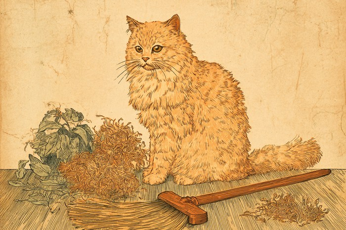

春は暑さに備えて毛を減らし、秋は冬の寒さに備えて保温性の高い毛へ生え替わる——ダブルコートの犬猫に備わった季節性の換毛サイクルが、「ごっそり抜ける」現象の正体です。 Why do dogs and cats shed so much in autumn? It's all part of getting ready for winter.
🔍 ちょっと寄り道:生まれ持った気質という意味では、人にも生年月日から占う視点があります。気になった方は黒曜診断を覗いてみてください。
春と秋、年に2回の「衣替え」
秋にごっそり抜けるのは、寒さに備えて冬毛へ生え替わる時期が来たからで、春の抜け毛とは目的がまったく逆なのです。犬や猫の毛がまとまって抜け替わる時期を「換毛期」と呼びます。多くの犬猫では春と秋、年におよそ2回訪れます。春の換毛は、暑い季節に向けて厚い冬毛を落とし、被毛を軽くするためのもの。一方、秋の換毛は、寒さに備えてふかふかの冬毛を新しく生やすためのものです。秋に古い毛がごっそり抜けるのは、その下で冬毛が育っているサイン。このスイッチを入れているのは日照時間や気温といった季節の変化で、日が短くなり空気が冷えてくると、体は自然と冬支度を始めるのです。
出典: Moriello, K.A. "The Integumentary System in Animals" Merck Veterinary Manual, 2025. merckvetmanual.com
ダブルコートとシングルコート、抜け方の違い
下毛が密なダブルコートは換毛期に大量に抜け、下毛の少ないシングルコートは換毛期がはっきりせず年間を通して少しずつ抜ける、というのが両者の違いです。換毛期がはっきり現れるのは「ダブルコート」と呼ばれる被毛の持ち主です。硬めの上毛と、その下に密生する柔らかい下毛の二重構造で、柴犬やゴールデン・レトリバー、猫ならノルウェージャン・フォレスト・キャットなどが代表格。季節に合わせて下毛がごっそり入れ替わるため、換毛期には驚くほどの量が抜けます。対してプードルやマルチーズのような「シングルコート」は下毛がほとんどなく、換毛期がはっきりしません。その代わり、年間を通して少しずつ毛が抜けていきます。「うちの子はあまり抜けない」と感じるなら、被毛の構造が理由かもしれません。

抜け毛を放っておくとどうなる?
放っておくと古い毛が皮膚の近くに残って蒸れやすくなり、皮膚トラブルの原因になることがあるため、換毛期はこまめなブラッシングがおすすめです。換毛期の抜け毛は「自然に落ちるから放っておいて大丈夫」と思いがちですが、実はそうでもありません。ブラッシングを怠ると、残った古い毛が新しい毛と絡まり、特に下毛の密なダブルコートでは蒸れが皮膚トラブルにつながりやすくなります。いつもより少しこまめにブラッシングをして古い毛を取り除いてあげれば、抜け毛が減って掃除が楽になるうえ、皮膚の状態を目で確かめるきっかけにもなります。気になる赤みやかゆみがあれば、獣医師に相談を。
一年中空調の効いた室内で暮らしていると、季節の変化を感じにくくなり、換毛期のメリハリがあいまいになって年間を通して少しずつ抜け続ける子もいると言われています。抜け毛の量は、その子の暮らす環境も映しているのですね。